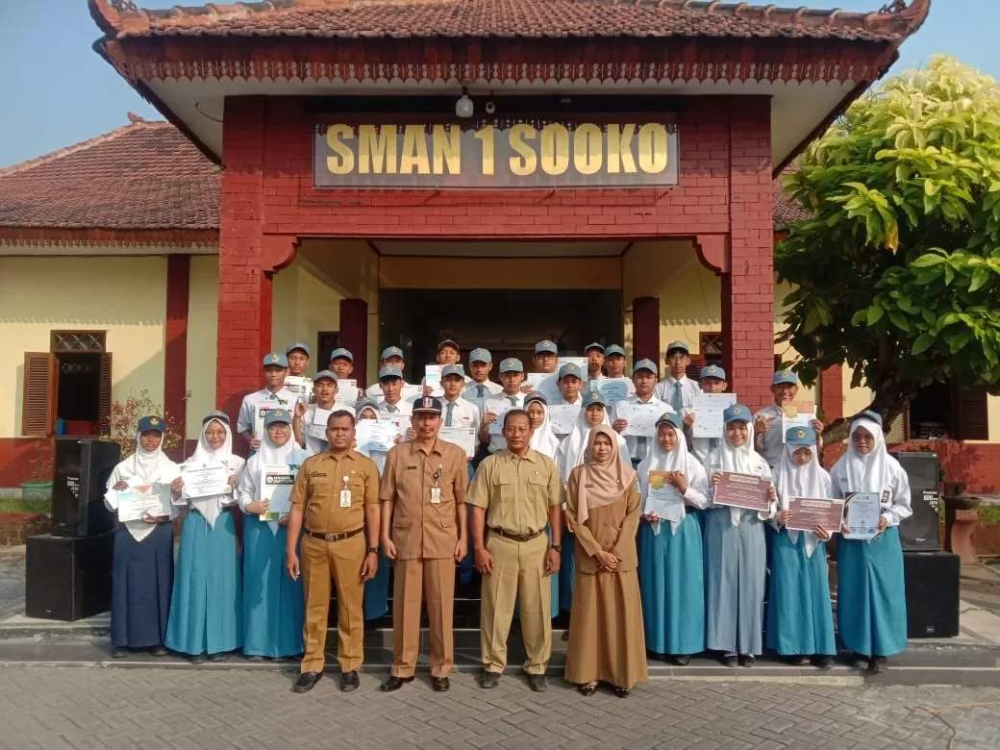

Sejarah
SMAN 1 SOOKO adalah salah satu sekolah senior dan terfavorit di kabupaten Mojokerto yang saat ini telah menjadi sekolah Rintisan Sekolah Bertaraf Internasional (RSBI) dan menuju ISO 9001:2008. SMAN 1 SOOKO atau yang lebih akrab disingkat SMANSASOO ini awal mulanya berdiri pada tahun 1960 oleh Bupati R. Ardi Sriwidjojo. Sekolah yang bertempat di jalan R. Akhmad Basuni No. 361 ini didirikan atas dorongan masyarakat Kabupaten dan kota Mojokerto.
SMAN 1 Sooko telah mengalami beberapa kali pergantian nama. Pada tahun pertamanya, tahun 1960, bernama SMA NEGERI MOJOKERTO. Kemudian pada tahun 1972 berubah menjadi SMPP (Sekolah Menengah Pembangunan Persiapan). Tahun 1984 SMPP diubah namanya menjadi SMAN 1 Sooko. Dan pada tahun 1994 sempat berganti nama menjadi SMUN 1 Sooko yang akhirnya pada akhir tahun 1994 berubah kembali menjadi SMAN 1 Sooko.